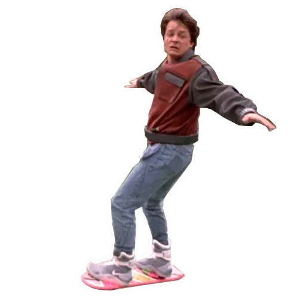

Для тех, кто в бункере
Воздушные трассы сегодня на удивление свободны, да и таксисты не лихачат на летающих авто. Наши дни оказались немного не такими, каким увидели его герои фильма "Назад в будущее 2". Что и говорить, даже вывернутые карманы в моду не вошли. Мы всё ещё завязываем шнурки сами, и пицца не растёт в микроволновке, как в чудесном "гидраторе" с голосовым управлением...
Так может просто мы живем не в той реальности?🤔
Hover-цитатник

«Наверное, ребята, вы ещё не созрели. Но вашим детям понравится», – Марти Макфлай.
«Дороги? Там, куда мы едем, они не нужны», – Доктор Эмметт Браун.
«Ночью прилетел Дарт Вейдер с планеты Вулкан и сказал мне, что если я не приглашу Лоррейн, он расплавит мне мозги», – Джордж Макфлай.